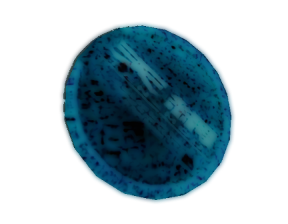

Pie Hiking is a navigation technique involving thrown pies.
It's a popular way of travelling in the dreamsphere.
|  |
The tool used for pie hiking is the Pie tool. |
Someone who pie hikes is known as a "Pie Hiker".
To start off, try out the training course in Ten-Mou.
Watching some
course guides
may help with your training.
Here
is a YouTube playlist created by many pie hikers.
It can take some time to get used to pie hiking.
Take it slow at first before you are comfortable with the pie.
Practice and patience are keys to master pie hiking.
To create a pie-hiking course, try out Pie Hiking Creation Kit plugin.
Meet pie hikers from all over the dreamsphere!
Compete in pie-hiking races and win pie skins!
Who will emerge victorious as the Pie Hiking Champion?
Poster image from Dream Game.
A dreaming system inspired by Dream Game,
but every dream is a big pie hiking map!
How many pie hiking courses can you conquer?
Game icon of Pie Hiking Difficulty Test.